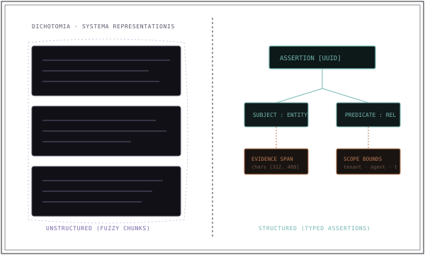

Ajan bilgisini temsil etmenin iki paradigması#
Bir yapay zekâ ajanı bilgiyi hatırladığında, onu belirli bir veri temsilinde saklamak zorundadır. Temel mimari ayrım, yapılandırılmamış metin parçaları ile tipli yapılandırılmış assertion'lar arasında yaşanır.

Yapılandırılmamış hafıza ham konuşma turlarını, markdown notlarını veya belge bölümlerini saklar. Bilgiyi bulmak için anlamsal benzerliği tahmin eden embedding algoritmalarına güvenir. Yapılandırılmış hafıza ise ayrık varlıkları, nitelikleri, ilişkileri ve doğruluk koşullarını biçimsel şema tablolarına çıkarır.
Çelişki ve durum mutasyonu sorunu#
Tamamen yapılandırılmamış hafızanın temel kusuru, ajanın zamanla değişen bir olguyu güncellemesi gerektiğinde ortaya çıkar:
Yapılandırılmış hafızada ise durum değişiklikleri veritabanı anahtarları, zaman damgaları ve revizyon yaşam döngüleri üzerinden deterministik biçimde yönetilir. Sistem prefers_language varlık niteliğini günceller veya eski assertion kaydını geçersiz olarak işaretler.
Mühendislik ödünleşimlerinin karşılaştırması#
| Boyut | Yapılandırılmamış Hafıza (Metin + Vektör) | Yapılandırılmış Hafıza (Assertion + Şema) |
|---|---|---|
| Kabul / Yazma Karmaşıklığı | Düşük: metni böl ve embedding hesapla | Yüksek: ayrıştırma, varlık çıkarma ve şema doğrulaması gerektirir |
| Sorgu İfade Gücü | Yaklaşık anlamsal keşif, eş anlamlılar | Kesin mantıksal filtreler, sayısal karşılaştırmalar, join'ler |
| Çelişki Yönetimi | Zayıf: çelişkili metin parçaları birikir | Güçlü: birincil anahtarlar, sürümleme, açık güncellemeler |
| İlişkisel Çok Sekmeli Gezinim | Zayıf: açık varlık kenarlarını gezemez | Güçlü: graph gezinimleri ve ilişkisel SQL sorguları |
| Token Verimliliği | Düşük: uzun çok cümleli metin parçaları ekler | Yüksek: kompakt, kesin olgusal üçlüler (triple) ekler |
| Şema Evrimi | Önemsiz: şemasız metin depolama | Veritabanı geçişleri (migration) ve tipli şema güncellemeleri gerektirir |
Modern sentez: Ham kanıtla desteklenen yapılandırılmış olgular#
Yüksek güvenilirlikli ajan mimarileri, yapılandırılmış ile yapılandırılmamış veri arasında yapay bir tercih yapmaya zorlamaz. Bunun yerine iki temsili çift katmanlı bir modelde birbirine bağlar:
- Yapılandırılmış assertion; indekslenebilir, filtrelenebilir kimliği oluşturur (Özne, Yüklem, Nesne, Zaman, Kapsam).
- Ham yapılandırılmamış metin parçası; doğrulanabilir kanıt aralığını oluşturarak orijinal bağlamın korunmasını sağlar.
- Sorgular; önce tenant ve kapsam izolasyonunu garanti etmek için yapılandırılmış filtreleri çalıştırır, ardından bu güvenli sınır içinde anlamsal benzerliği ölçer.
MESA'nın kanonik assertion mimarisi#
MESA Core içinde hafıza, kapalı bir vektör yığınından ibaret değildir. Kanonik bilgi kaynağı; açık şemaları, yaşam döngüsü durumlarını ve kanıt aralıklarını barındıran ilişkisel SQLite veritabanıdır.
LanceDB ve Kùzu yalnızca türetilmiş projeksiyonlar olarak çalışır. Bir projeksiyon bozulursa veya senkronizasyonunu yitirirse, kanonik SQLite assertion'larından deterministik olarak yeniden üretilebilir. Bu çift katmanlı mimariyi MESA Core Dokümantasyonu sayfasında inceleyin.